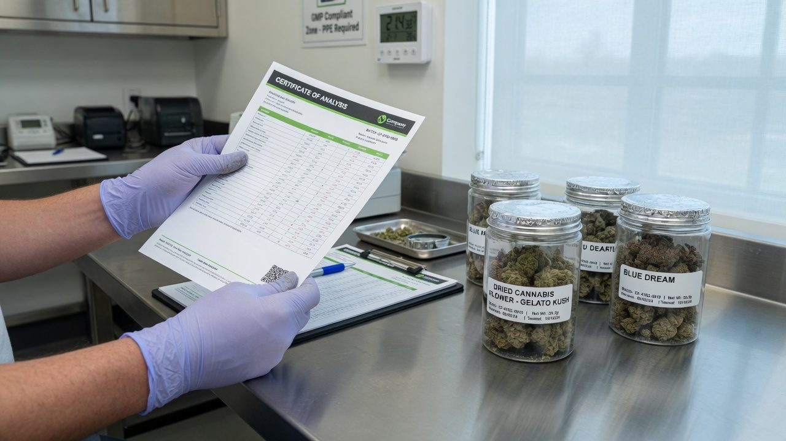
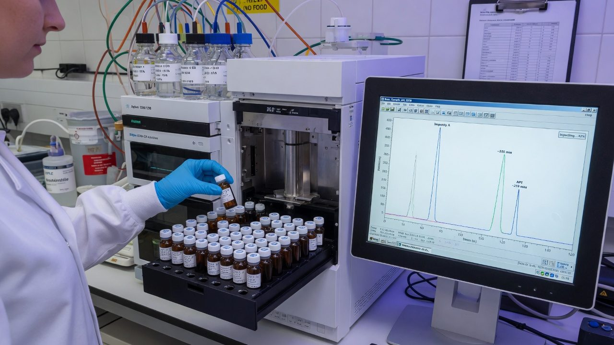
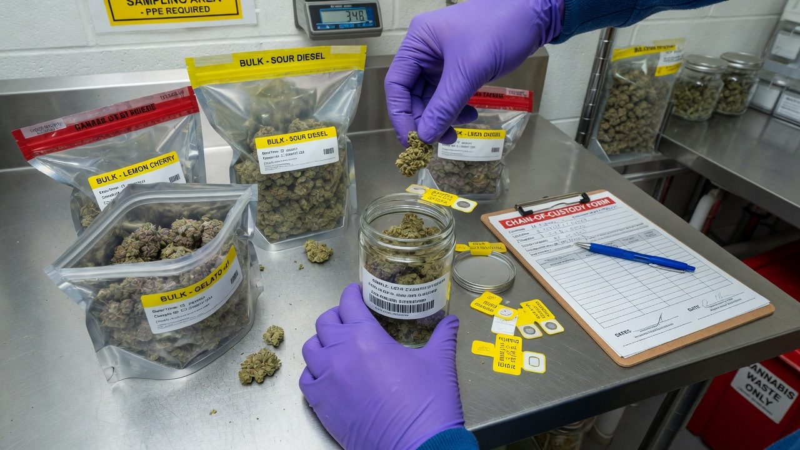
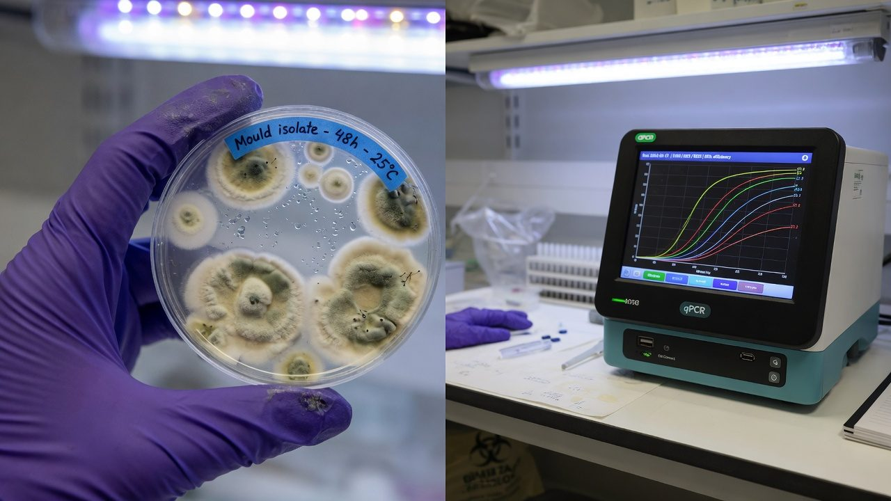

Lab testing, potency and the COA
A certificate of analysis is a measurement of one small sample — not a property of your crop. This guide reads a COA line by line, checks the potency maths (the 0.877 factor and the chemistry behind it), explains every test family from qPCR to ICP-MS, and is honest about the part the industry keeps getting caught at: inflated numbers.
The Piece of Paper That Prices Your Crop
Every batch you sell — and in a medicinal system, every batch you release — ends its life as a one-page document from a testing laboratory: the certificate of analysis, or COA. It says what is in the flower (cannabinoids, terpenes) and what must not be (mould, heavy metals, pesticides, mycotoxins). Buyers mostly read one number on it — total THC — and that number moves the price. Which is exactly why it is the most gamed number in the industry, with peer-reviewed studies documenting systematic inflation on retail labels[1][2].
Here is the single idea that makes every section of this paper make sense: a COA is not a property of your crop. It is a measurement — of one small sample, pulled one way, prepared one way, run on one instrument, by one lab, on one day. Change any of those and the number changes, with no fraud involved. Most of the grief in cannabis testing — ‘same weed, different number’, lab shopping, inflated labels — comes from people forgetting, or exploiting, that distinction.
The certificate is a photograph of one gram, taken through one lab's lens. It can be a sharp, honest photograph — that is what good sampling and a good lab buy you — but it is never the landscape. Everything in this paper is about knowing how much landscape your photograph actually shows.
Accuracy, self-review, and grain-of-salt notes
We've gone to great lengths to keep these guides honest. One of the main ways we do that is self-review: we actively look for claims that are subjective, only lightly backed by literature, or based on grower practice rather than a controlled study — and we call those out instead of dressing them up as settled science.
Often there simply is no paper for the decision you're making. In those cases we're drawing on what other growers report and what has worked in our own rooms. That can still be useful — but it is not a lab proof. Do what works for your plants, your room, and your meters. If a table disagrees with your crop, believe the crop and log the difference.
- Core definitions and measurement units used in the paper
- Safety-critical limits where occupational or standards sources are cited
- Numeric stage targets (light, climate, feed) as starting bands, not laws
- SOPs that work in many rooms but need your genetics and meters
- Any single-number 'guaranteed' yield or potency claim without a multi-site trial
- Controller setpoints copied from another facility without re-calibration
See something glaringly wrong? Tell us and we'll fix it. Please open a GitHub issue with the paper name and what looks off (include a source if you have one): Report an accuracy issue. Local law, labels, and licences always override any recipe here. Inline notes labelled grain of salt flag the highest-risk over-trust points in the text.
Core Answer
To read a COA in sixty seconds, check eight things in order:
- Who tested it — a named lab with a checkable accreditation (ISO/IEC 17025 or, in medicinal frameworks, GMP certification)[16].
- What was tested — sample ID, batch, matrix, sample mass, and crucially who pulled the sample. ‘Client-submitted’ means the lab never saw your batch.
- The basis — dry-weight or as-received, and the moisture content. This alone moves potency ~10–15%.
- The potency table — acids (THCA) and neutrals (THC) on separate rows means an HPLC method. Then do the maths: total THC = Δ9-THC + 0.877 × THCA. It should reconcile exactly.
- Units — % w/w and mg/g say the same thing (1% = 10 mg/g); don't let a unit switch fool you.
- Each contaminant family — microbial, metals, pesticides, mycotoxins, solvents — is its own test with its own method and pass/fail. Potency says nothing about safety.
- The footnotes — LOQs, ND definitions, method references. No LOQ column means ‘ND’ is uninterpretable.
- The release — a named, dated QA signature. In GMP systems this is where a COA becomes a release decision instead of a marketing asset[15].
And the honesty part, up front: the peer-reviewed record shows reported retail potency in several legal markets is systematically inflated — 70% of tested Colorado flower samples ran more than 15% below label in one study[1], 70% of a three-state audit fell outside ±20% of label[12], and product frequencies ‘bunch’ suspiciously just above the 20%-THC price threshold[2]. When a single number sets the price, someone will lean on it. The defence is knowing how the number is made — which is the rest of this paper.
How a Test Actually Happens
Between ‘cut a sample’ and ‘PDF lands in your inbox’ sits a pipeline, and every stage of it shapes the final numbers. The instrument is the glamorous part; the sampling and the prep are where the number is really decided.
Each family of tests uses different physics, which is why one lab houses half a dozen instruments:
| Test family | What it looks for | Typical instrument | Typical timeframe |
|---|---|---|---|
| Potency (cannabinoids) | THCA, Δ9-THC, CBDA, CBD, CBGA, minor cannabinoids | HPLC-DAD (liquid chromatography) | 1–3 days |
| Terpenes | aroma volatiles (myrcene, limonene…) | GC-MS / GC-FID (gas chromatography) | 1–3 days |
| Microbial | TAMC, TYM, pathogens, Aspergillus | Culture plates (CFU) or qPCR (DNA) | plates 3–7 days; qPCR hours |
| Heavy metals | arsenic, cadmium, lead, mercury | ICP-MS after acid digestion | 1–3 days |
| Pesticides | panels of dozens of residues | LC-MS/MS + GC-MS/MS | 2–5 days |
| Mycotoxins | aflatoxins B1/B2/G1/G2, ochratoxin A | LC-MS/MS | 2–5 days |
| Residual solvents | butane, ethanol, acetone… | headspace GC | 1–3 days |
| Moisture / water activity | water content; water availability | loss-on-drying balance; aw meter | same day |
Culture-based microbiology is the slow lane — colonies need days to grow. qPCR collapses that to hours, which is one reason labs and regulators have been migrating to it, with trade-offs covered in the microbial section below.

Reading a COA, Block by Block
Below is a mock certificate from a fictional lab — Example Analytical Ltd — laid out the way most real ones are. The eight callouts are the eight places your eyes should go, in order.
- 1Lab identity and accreditationA real lab puts its name, address and accreditation number where you can check them against the accreditation body's public register. A PDF with a logo and no accreditation number is just a nicely typeset claim.
- 2Report ID and versionOne report, one version. Amended reports (‘v2’) happen legitimately — but an amendment that only ever moves THC upward deserves questions.
- 3Sample metadataSample ID, batch/lot, matrix, mass received, dates — and who did the sampling. ‘Client-submitted’ means the number describes whatever was in the bag you sent, which is a very different claim from a lab-sampled batch result.
- 4Basis and moistureAs-received or dry-weight, with the measured moisture. Without this line, two COAs cannot be compared at all — see the basis section below.
- 5The potency tableTHCA and Δ9-THC on separate rows (an HPLC signature), minor cannabinoids, a starred total. Verify: total THC = Δ9-THC + 0.877 × THCA. On the mock: 0.92 + 0.877 × 24.20 = 22.14%. It reconciles. If it doesn't, ask why before you trust anything else on the page.
- 6Footnotes and LOQsND means ‘not detected above the limit shown’ — never zero. The LOQ column is what makes ND mean something. Its absence is a reporting failure.
- 7Contaminant panelsEach family — microbial, metals, pesticides, mycotoxins, solvents — is a separate test on a separate subsample. A stellar THC number and a failed Aspergillus test live happily on the same certificate.
- 8Release signature and the small printA named QA person, dated. Then the ISO-language honesty clause: results relate only to the sample as received. That sentence is the legal truth of everything above it.
Accredited labs will confirm a report number if you ring them, and many print a QR code or portal link for verification. Fake and altered COAs circulate in every market — a two-minute check beats arguing with a buyer later.
Total THC: the Maths and the Chemistry
The living plant barely makes any THC. It makes THCA — tetrahydrocannabinolic acid — the same molecule wearing a carboxyl group (–COOH). THCA is not intoxicating; heat converts it to THC by decarboxylation: the carboxyl group breaks off and leaves as CO₂ gas[4]. A lighter, a vape, an oven — that is where most of the THC in your life is actually created.
That is the whole mystery of the 0.877 factor: it is a molecular-weight ratio, not a correction fudge. THC weighs 314.5 g/mol; THCA weighs 358.5 g/mol; 314.5 ÷ 358.5 = 0.877. So the standard label formula is:
This is the ‘total potential THC’ convention used by regulators and analytics datasets alike[2][3]. Read it as a ceiling: it assumes every single THCA molecule survives conversion. Real-world heating never achieves that — some THCA and THC are destroyed or lost before they reach anyone.
How fast does the conversion actually run? In controlled kinetics work, THCA in an open reaction vessel fully converted in about 30 minutes at 110 °C, about 9 minutes at 130 °C and about 6 minutes at 145 °C — and, heated in the dark under vacuum, produced no significant CBN (the oxidation by-product)[4]. In air, with light and higher temperatures, losses grow — which is exactly why the formula's assumption of perfect conversion makes it a maximum, not a prediction.
Slow decarboxylation also happens at room temperature — during curing and storage, THCA quietly ticks over to THC, and THC slowly oxidises onward to CBN. This is why an old COA and a fresh one on the same batch can honestly disagree: the material itself moved.
CBDA → CBD uses its own molecular-weight ratio (also 0.877, since the acids and neutrals differ by the same CO₂ group): total CBD = CBD + 0.877 × CBDA. Any ‘total’ cannabinoid on a COA should be exactly this arithmetic — recompute it when it matters.

Why the Instrument Changes the Answer
Two chromatography families dominate potency testing, and they do not see the same molecules. HPLC (high-performance liquid chromatography) pushes the extract through a column in liquid at near-room temperature, so THCA and THC arrive at the detector as separate peaks. GC (gas chromatography) must vaporise the sample in an injector inlet at roughly 250–300 °C — and at that temperature THCA decarboxylates on the spot. The acid never reaches the detector as itself[6].
The nasty detail is that the in-inlet conversion is incomplete and variable. Classic forensic work isolating pure THCA found decarboxylation under GC conditions converted only around 70% of the acid, and concluded that the only exact route to total THC is to measure THCA and THC separately and add them arithmetically — any post-decarboxylation measurement gives a minimum, not the true value[5]. On GC, acids are invisible unless the lab derivatises them first (a chemical cap that survives the heat)[6].
| HPLC-DAD | GC-FID / GC-MS | |
|---|---|---|
| Operating temperature | ≈25–40 °C column | ≈250–300 °C inlet, hot column |
| Sees THCA and THC separately? | Yes — two peaks | No — acid decarboxylates in the inlet |
| Total THC comes from | arithmetic: THC + 0.877 × THCA | one merged peak (conversion incomplete[5]) |
| Derivatisation needed for acids | No | Yes, or the acids are lost[6] |
| Typical role today | potency (industry standard) | terpenes, residual solvents; potency in some jurisdictions |
Either the lab ran GC (fine, but the total is a floor, not an exact number), or the report is hiding detail. Both are reasons to ask for the method reference — which any accredited lab lists on the certificate.
Percent, mg/g and the Moisture Basis
Units first, because this one is mercifully simple: % w/w and mg/g are the same number, one decimal place apart. 1% w/w = 10 mg/g. Flower COAs usually report %, oils and edibles often report mg/g or mg per unit. 22.14% = 221.4 mg/g. No trap here beyond unfamiliarity.
The basis is the real trap. Flower is roughly 10–13% water when properly dried. A potency percentage can be computed against the total mass including that water (as-received / ‘as-is’), or against the solids alone (dry-weight). Same flower, same chemistry, two different numbers:
| Moisture content | As-received reading | Dry-weight equivalent |
|---|---|---|
| 8% | 20.0% | 21.7% |
| 10% | 20.0% | 22.2% |
| 12% | 20.0% | 22.7% |
| 15% | 20.0% | 23.5% |
Your 22% dry-weight COA against a competitor's 20% as-received COA is not a comparison — it is two different denominators. Check the basis line first, convert, then compare. Interlaboratory studies show labs vary meaningfully even on the moisture measurement itself[8], so small cross-COA gaps are noise.

The Sample Defines the Number
Everything the instrument will ever see is decided before the courier arrives. A batch might be 12 kg; the composite sample a few tens of grams; the analytical portion that actually gets extracted, half a gram to a gram. That gram speaks for everything — which is why pharmacopoeial guidance treats sampling procedure as a quality attribute in its own right, not paperwork[7].
Cannabis makes this harder than most matrices because the analyte lives in the trichomes, and trichomes are not evenly distributed: top colas that grew in strong light run richer than shaded lower buds, small buds shed resin in handling, and ground material stratifies as kief settles. A sample built from the prettiest top nugs is not a batch sample — it is a brochure.
- 1Define the batch firstOne cultivar, one room, one harvest, one process. If it isn't homogeneous by construction, no sampling plan can rescue it.
- 2Pull increments, not a grabMultiple increments from different containers, positions and depths — including the unglamorous middle and bottom. More, smaller increments beat one big scoop.
- 3Composite and recordCombine increments, record who pulled what, from where, when. This is the start of chain of custody.
- 4Homogenise before splittingGrind and mix before any subsample is taken — for potency, the lab does this again on its portion.
- 5Keep a retained twinSplit a duplicate sample and store it. When a number looks wrong, the retained sample is your only honest recourse.
Sending top-cola-only samples inflates the certificate, your customer's expectations, and your own process data all at once. The batch will eventually be smoked by someone who bought the number. Sample like you'll be audited — in medicinal frameworks, you will be.
Even perfect sampling leaves honest variance: duplicate composites from one batch, run by one lab, routinely land a point or so of THC apart. Treat differences of one to two percentage points as the noise floor of the whole exercise, not as information.

Microbial Testing: Plates, qPCR and Aspergillus
Microbial testing asks two kinds of question. How much is growing on this? — answered by counts: total aerobic microbial count (TAMC), total yeast and mould (TYM / TYMC), bile-tolerant Gram-negatives. And is anything dangerous present? — answered by presence/absence tests for specified organisms: Salmonella, pathogenic E. coli, and in inhaled products the four pathogenic Aspergillus species.
| Test | What it counts | Common limit style | Notes |
|---|---|---|---|
| TAMC | aerobic bacteria (CFU/g) | order of 10⁵ CFU/g; varies by jurisdiction[10] | general bioburden indicator |
| TYM / TYMC | yeasts + moulds (CFU/g) | order of 10⁴ CFU/g; the contested one | flower hosts a natural surface flora |
| Bile-tolerant Gram-negatives | gut-associated bacteria | order of 10³ CFU/g | hygiene indicator |
| Specified pathogens | Salmonella, shiga-toxin E. coli | absent in 1 g | hard pass/fail |
| Aspergillus (pathogenic spp.) | A. fumigatus, flavus, niger, terreus | not detected in 1 g | usually enrichment + qPCR |
Plates and qPCR genuinely disagree, and metagenomic sequencing has shown why: culture media select. When researchers sequenced what actually grew in standard culture-based yeast-and-mould tests of cannabis, the plates were growing organisms including bacteria — while toxigenic fungi present on the flower were under-represented, and organisms of real clinical concern could be missed entirely[9]. Meanwhile qPCR happily counts DNA from dead cells — so a batch remediated with heat or irradiation can fail qPCR while passing plates.
| Culture plating | qPCR | |
|---|---|---|
| Measures | what grows on that medium, at that temperature | copies of target DNA |
| Time | 3–7 days | hours |
| Counts dead organisms? | no | yes — DNA persists after kill steps |
| Species identification | poor without follow-up work | built into the primers |
| Characteristic failure | wrong organisms grow; targets don't[9] | dead-DNA false fails; primer mismatch |
Inhaled Aspergillus can cause invasive aspergillosis in immunocompromised people — exactly the population medicinal cannabis serves. A count-based limit makes no sense for an organism where the acceptable inhaled dose for a transplant patient is effectively zero; hence ‘not detected in 1 g’.
The Big Four and the ICP-MS
Cannabis is an enthusiastic accumulator of metals — the same trait that gets hemp planted for soil remediation pulls cadmium and lead out of your substrate, fertiliser and water and stores them in tissue. The panel nearly everywhere centres on the big four: arsenic, cadmium, lead and mercury, with some frameworks screening a wider element list[8].
| Metal | Typical routes into flower | Why it's on the panel |
|---|---|---|
| Arsenic (As) | bore water, some rock-derived amendments | carcinogen |
| Cadmium (Cd) | phosphate fertilisers, contaminated substrate | readily taken up by the plant; accumulates in kidneys |
| Lead (Pb) | dust and soil contact, old solder/pipework, contaminated inputs | neurotoxin — no safe exposure level |
| Mercury (Hg) | rare — water or industrial contamination | neurotoxin |
The instrument is ICP-MS — inductively coupled plasma mass spectrometry. The lab digests the sample in hot acid until nothing but dissolved elements remain, sprays that solution into an argon plasma running at thousands of degrees, and counts the resulting ions by mass. It is absurdly sensitive — parts-per-billion — which is why metals results carry LOQs that look like 0.01 µg/g.
Flower fails metals because something upstream carried them in. Collect certificates for every fertiliser and substrate lot, test source water, and a metals fail becomes a lookup instead of a mystery. Inhalation limits are tight enough that one contaminated input lot can sink a batch.
Pesticide Panels: a List, Not a Guarantee
A pesticide test is a panel: a defined list of compounds, each measured against an action limit. Pass means ‘nothing on this list was found above these limits’ — it does not mean pesticide-free, and it says nothing about compounds the panel doesn't include. That distinction matters because panels differ absurdly between jurisdictions: a survey of US state rules found 551 distinct pesticides regulated somewhere, with action limits for the same compound spanning up to four orders of magnitude between states[10].
- Two instruments are needed for coverage. LC-MS/MS catches most modern residues; GC-MS/MS catches the volatile and halogenated ones. A lab quoting a big panel runs both.
- Inhalation changes the toxicology. Residues that are tolerated on lettuce can pyrolyse into nastier chemistry when smoked — some fungicides are reported to release hydrogen cyanide on combustion, which is why cannabis limits are often far tighter than food limits.
- History justifies the paranoia. Pre-regulation Californian concentrate screening found pesticides in roughly one-third of samples[11].
- Drift and carryover count. You can fail a panel without ever spraying — neighbouring agriculture, contaminated secondhand equipment, or a dirty trim room can deposit residues.
Look for: the panel size (how many analytes), the action limits and their source, the LOQ per analyte, and the method (LC-MS/MS, GC-MS/MS or both). A one-line ‘Pesticides: PASS’ with none of that attached is a vibe, not a result.
Residual Solvents and Mycotoxins
Residual solvents apply to extracts: whatever chemistry pulled the resin out — butane, propane, ethanol, CO₂ with ethanol polish — traces can remain, and headspace GC measures them in the finished product. Limits are set per solvent, loosely following pharmaceutical solvent classes: near-zero tolerance for the genuinely toxic ones (benzene, toluene — never used deliberately, but present as impurities in cheap gas), workaday limits for the common process solvents.
Why does a solventless hash or rosin still carry a solvent test? Three honest reasons. The product category triggers the test in most rule sets regardless of process; the test is the only way to verify the solventless claim rather than take it on faith; and contamination doesn't need an extraction step — cleaning agents, fuels and off-gassing in storage can introduce volatiles. A clean solvent panel on rosin is cheap proof your marketing is true. Early concentrate surveys found residual solvents in around 30% of samples, so buyers learned to ask[11].
Mycotoxins are the chemical ghosts of mould: aflatoxins B1, B2, G1, G2 (from Aspergillus flavus and relatives) and ochratoxin A, measured by LC-MS/MS at parts-per-billion limits[10]. Two facts make them their own line on the COA rather than a footnote to the microbial section:
- They outlive the mould. Kill steps — heat, irradiation, ozone — can crash a TYM count while leaving the toxins fully intact. A batch can pass microbiology and still fail mycotoxins, and remediated product is exactly where to expect that pattern.
- They are potent at absurdly low doses. Aflatoxin B1 is among the strongest natural carcinogens known, hence limits in the µg/kg (ppb) range in medicinal frameworks[15].
Irradiated or heat-treated flower that now passes plate counts still carries whatever toxins the mould made first — and its dead DNA may still fail qPCR. If a batch needed remediation, the mycotoxin line is the one to read hardest.
Water Activity vs Moisture Content
Two water numbers appear on flower COAs and they answer different questions. Moisture content (%) is how much water is in the sample — mass of water over total mass. Water activity (aw, scale 0–1) is how available that water is to microbes — the equilibrium relative humidity the sample generates in a sealed space. Mould does not care how much water you have; it cares whether it can get at it. That makes aw the microbially meaningful number, and it is why pharmacopoeial thinking on stored cannabis centres on a water-activity specification of ≤0.65[7].
| Moisture content | Water activity (aw) | |
|---|---|---|
| What it measures | how much water (% of mass) | how available the water is (0–1) |
| Instrument | loss-on-drying balance | chilled-mirror / capacitive aw meter |
| Microbial relevance | indirect — depends on how water is bound | direct — growth thresholds are aw thresholds |
| Typical spec for flower | ≈10–13% | 0.55–0.65 |
Operationally: dry and cure to a water-activity target, and let moisture content be whatever it is. The paired numbers on the COA also sanity-check each other — aw 0.75 with 11% moisture claims a strange sample; question it.
The Inflation Problem: What the Record Shows
If a single number sets the price, the number comes under pressure. This is not cynicism — it is the documented, peer-reviewed history of legal cannabis markets, and any grower choosing a lab should know it cold.
The mechanism is visible in state datasets. Reported potency for chemotype-I flower across Washington's six largest labs differed systematically: median total THC ranged from 17.7% at the lowest-reporting lab to 23.2% at the highest — a 5.5-percentage-point spread on comparable product that persisted after controlling for strain and producer[3]. And reported values ‘bunch’ just above the magic 20% price threshold: the frequency of products jumps discontinuously above 20% — a 43% spike in Nevada, 17% in Washington — with the bunching concentrated at specific labs (two later-suspended labs showed a 47% spike; the state's largest lab, 1%)[2]. Biology does not know where 20% is. Pricing does.
Lab shopping is the market dynamic that produces this. Split one batch across three labs, keep the highest number, and give that lab your business. Labs know it. The lab that reports honestly loses accounts to the lab that reports generously — a race to the bottom wearing a lab coat. Inflation methods range from soft (flower-only calibration bias, generous rounding, tolerant sampling) to plainly fraudulent: in 2024 Oregon's regulator charged seven of the state's eleven accredited labs over inflated THC results, including allegations that staff at three labs spiked customer samples with kief before analysis[14]. Licence actions and competitor lawsuits over inflated potency and passed-but-contaminated product have followed in California and Massachusetts.
Honest inter-lab variance is real even among competent labs — interlaboratory programmes exist precisely because cannabis measurement comparability is hard[8] — but honest variance is symmetric. It scatters around the truth. Inflation is directional: always the good news. If a lab's numbers are consistently the best in town, that is not luck; that is a product they are selling.
What an operator does with this: pick a lab for its accreditation scope and method transparency, not its averages; split-sample occasionally against a second lab and expect ~1–2 points of honest scatter; keep retained samples; and treat any account manager who promises numbers as a walking licence risk. In GMP-style medicinal systems the incentive flips — the lab serves batch release, not marketing — which is a large part of why those numbers are steadier[15][16].
What One Number Can and Can't Tell You
A COA is genuinely useful — inside its limits. What a single certificate can tell you: the potency class of the sampled material (a 15% batch and a 25% batch are truly different things); the pass/fail status of that sample against that panel; and, over many batches from your own room with consistent sampling, a trend worth steering by. What it cannot tell you:
- Your whole room's number. The certificate describes the sample. The batch inherits it only as far as your sampling was honest.
- Differences of a point or two. Sampling scatter plus inter-lab spread swamp them — the documented systematic spread between labs alone was 5.5 points[3].
- Quality, effect or experience. THC% correlates weakly with what a product is like to consume; terpenes, minor cannabinoids, cure and freshness carry most of it. Chasing the number off the certificate is chasing the wrong thing.
- Next batch. A COA is a record, not a forecast. Genetics × environment × process will move the next one.
When the number looks weird
| Symptom | Most likely explanations | What to check |
|---|---|---|
| THC jumped 3–4 points on the same cultivar | sampling drift (top colas), basis change, different lab or method | who sampled; basis + moisture lines; lab and method IDs on both COAs |
| Total THC ≠ THC + 0.877 × THCA | typo, different total convention, GC-derived total | recalculate; ask the lab which formula and method they used |
| Flower reporting 35%+ total THC | biologically implausible for nearly all cultivars — enriched sample or inflation | split-sample retest at an independent lab; check for kief enrichment |
| TYM failed, retest passed | different method (plate vs qPCR), different subsample, or remediation in between | method lines on both COAs; whether the batch was treated between tests |
| Metals failure from nowhere | new fertiliser or substrate lot, water change, equipment contamination | input CoAs and lot numbers; source-water test |
| Moisture reads 6% but flower feels normal | sample dried in transit or sat before analysis | water activity at pack-out; days between sampling and testing |
| CBD appears in a THC cultivar | mislabelled genetics, or peak misassignment at the lab | verify the cultivar; ask the lab to confirm peak identity |
COA red flags
Anyone can typeset a PDF. If the lab and its accreditation can't be verified in a public register, the document is a claim, not a certificate.
‘ND’ without a limit is uninterpretable — not detected above what? Serious labs always print it.
Either a GC method (total is a floor, not exact) or lazy reporting. Both mean: ask for the method reference.
The lab measured a bag someone filled. Treating that as a batch result is the oldest trick in the book.
Always 2–3 points above everyone else in town. That consistency is a business model, not chemistry[2].
Reissued certificates happen; reissues that only ever move THC upward with no explanation are a pattern worth walking away from.
One certificate = one photograph of one gram, through one lab's lens, on one day. Photographs are useful. Just never confuse a photograph with the landscape — and be suspicious of anyone whose photographs are always sunnier than everyone else's.
NZ and Australia: Testing as Release, Not Marketing
In the Australasian medicinal systems the COA plays a structurally different role from a retail label. In Australia, unapproved medicinal cannabis products must conform to TGO 93 (Therapeutic Goods (Standard for Medicinal Cannabis) Order 2017): assayed cannabinoid content must sit within 90.0–110.0% of the label claim, contaminant limits (including aflatoxins and pesticide residues) apply, and the regulator can pull and test product at any time[15]. In New Zealand, products must meet the minimum quality standard under the Misuse of Drugs (Medicinal Cannabis) Regulations 2019, with critical tests performed by GMP-certified facilities and ISO/IEC 17025 accreditation recognised for the rest[16].
The operative concept is release testing: a batch is tested against a registered specification, a qualified person reviews the full data set, and the batch is formally released — or not. The COA becomes one input to a documented decision, made by someone whose signature carries liability. Contrast that with a retail market where the COA's main job is to make the jar look good on a menu, and the potency-inflation record earlier in this paper stops being surprising: same document, opposite incentive structure.
- A 90–110% label-claim window means a batch can fail for being too strong — the target is accuracy, not magnitude[15].
- Stability data and shelf-life claims ride on the same analytics — the release COA is re-verified over time, which quietly disciplines the initial numbers.
- Testing under GMP means validated methods, qualified instruments and audit trails — the lab's answer to ‘how do you know?’ is a documented system, not a shrug.
This section sketches the shape of the frameworks, not their current detail. Standards, schedules and guidance move; anyone operating under TGO 93 or the NZ scheme should work from the regulator's current documents[15][16] and their own quality agreements, not from a white paper.
For growers elsewhere, the takeaway is portable: the closer your own testing practice is to release-style discipline — fixed sampling SOP, one accredited lab, retained samples, trend charts, numbers nobody is paid to like — the more your COAs are worth, to you and to anyone auditing you.
References
- Schwabe AL, Johnson V, Harrelson J, McGlaughlin ME (2023). Uncomfortably high: testing reveals inflated THC potency on retail Cannabis labels. PLoS ONE 18(4):e0282396. (70% of 23 Colorado flower samples measured >15% below labelled THC.) https://journals.plos.org/plosone/article?id=10.1371/journal.pone.0282396
- Zoorob MJ (2021). The frequency distribution of reported THC concentrations of legal cannabis flower products increases discontinuously around the 20% THC threshold in Nevada and Washington state. Journal of Cannabis Research 3:6. (Defines total THC = 0.877 × THCA + THC; documents reporting spikes just above 20% concentrated at specific labs.) https://pmc.ncbi.nlm.nih.gov/articles/PMC7958443/
- Jikomes N, Zoorob M (2018). The cannabinoid content of legal cannabis in Washington State varies systematically across testing facilities and popular consumer products. Scientific Reports 8:4519. (Median total THC for comparable flower spanned 17.7-23.2% across the six largest labs.) https://pmc.ncbi.nlm.nih.gov/articles/PMC5852027/
- Wang M, Wang Y-H, Avula B, et al. (2016). Decarboxylation study of acidic cannabinoids: a novel approach using ultra-high-performance supercritical fluid chromatography/photodiode array-mass spectrometry. Cannabis and Cannabinoid Research 1(1):262-271. https://pmc.ncbi.nlm.nih.gov/articles/PMC5549281/
- Dussy FE, Hamberg C, Luginbühl M, Schwerzmann T, Briellmann TA (2005). Isolation of Δ9-THCA-A from hemp and analytical aspects concerning the determination of Δ9-THC in cannabis products. Forensic Science International 149(1):3-10. (Decarboxylation under GC conditions incomplete, ~70%; exact total THC requires measuring THCA and THC separately.) https://pubmed.ncbi.nlm.nih.gov/15734104/
- Pourseyed Lazarjani M, Torres S, Hooker T, Fowlie C, Young O, Seyfoddin A (2020). Methods for quantification of cannabinoids: a narrative review. Journal of Cannabis Research 2:35. (GC heat decarboxylates acidic cannabinoids unless derivatised; HPLC resolves acids and neutrals directly.) https://pmc.ncbi.nlm.nih.gov/articles/PMC7819317/
- Sarma ND, Waye A, ElSohly MA, et al. (2020). Cannabis inflorescence for medical purposes: USP considerations for quality attributes. Journal of Natural Products 83(4):1334-1351. (USP Cannabis Expert Panel: sampling, cannabinoid content, water activity, microbial and elemental contaminant specifications.) https://pubs.acs.org/doi/10.1021/acs.jnatprod.9b01200
- Yarberry A, Phillips MM, Wilson WB (2024). Cannabis Laboratory Quality Assurance Program: Exercise 2 cannabinoid final report. NIST IR 8519, National Institute of Standards and Technology. (Interlaboratory comparability of cannabinoid, moisture and toxic-element measurements in cannabis plant material.) (industry/manufacturer or non-journal source) https://www.nist.gov/publications/cannabis-laboratory-quality-assurance-program-exercise-2-cannabinoid-final-report
- McKernan K, Spangler J, Helbert Y, et al. (2016). Metagenomic analysis of medicinal Cannabis samples; pathogenic bacteria, toxigenic fungi, and beneficial microbes grow in culture-based yeast and mold tests. F1000Research 5:2471. (Culture media select for unintended organisms; toxigenic fungi under-detected by plate-based TYM.) https://f1000research.com/articles/5-2471/v1
- Jameson LE, Conrow KD, Pinkhasova DV, et al. (2022). Comparison of state-level regulations for cannabis contaminants and implications for public health. Environmental Health Perspectives 130(9):097001. (679 regulated contaminants across 36 states + DC — 551 pesticides, 74 solvents, 21 microbes, 5 mycotoxins; action limits vary up to four orders of magnitude.) https://pmc.ncbi.nlm.nih.gov/articles/PMC9472674/
- Raber JC, Elzinga S, Kaplan C (2015). Understanding dabs: contamination concerns of cannabis concentrates and cannabinoid transfer during the act of dabbing. Journal of Toxicological Sciences 40(6):797-803. (Pesticides in ~one-third and residual solvents in ~30% of pre-regulation California concentrates.) https://www.jstage.jst.go.jp/article/jts/40/6/40_797/_article
- Geweda MM, Majumdar CG, Moore MN, et al. (2024). Evaluation of dispensaries' cannabis flowers for accuracy of labeling of cannabinoids content. Journal of Cannabis Research 6:12. (107 dispensary flower samples from three states: only 30% within ±20% of labelled Δ9-THC; labels claimed up to 58.2%.) https://pmc.ncbi.nlm.nih.gov/articles/PMC10924369/
- Giordano G, Brook CP, Ortiz Torres M, et al. (2025). Accuracy of labeled THC potency across flower and concentrate cannabis products. Scientific Reports 15:20822. (277 Colorado products: 96.0% of concentrates but only 56.7% of flower within ±15% of label; measured potency significantly below label.) https://www.nature.com/articles/s41598-025-03854-3
- Sliwoski V (2024). Oregon cracks down on THC inflation and testing labs. Harris Sliwoski Canna Law Blog. (OLCC violation notices against seven of eleven accredited labs; three alleged to have spiked customer samples with kief.) (industry/manufacturer or non-journal source) https://harris-sliwoski.com/cannalawblog/oregon-cracks-down-on-thc-inflation-and-testing-labs/
- Therapeutic Goods Administration (Australia). Therapeutic Goods (Standard for Medicinal Cannabis) (TGO 93) Order 2017 — quality requirements for medicinal cannabis (assay 90.0-110.0% of stated content; contaminant limits incl. aflatoxins and pesticide residues). (industry/manufacturer or non-journal source) https://www.tga.gov.au/resources/legislation/therapeutic-goods-standard-medicinal-cannabis-tgo-93-order-2017
- Ministry of Health — Manatū Hauora (NZ). Requirements for the medicinal cannabis minimum quality standard (Misuse of Drugs (Medicinal Cannabis) Regulations 2019; GMP-certified testing for critical tests, ISO/IEC 17025 recognised otherwise). (industry/manufacturer or non-journal source) https://www.health.govt.nz/regulation-legislation/medicinal-cannabis/information-for-industry/working-with-medicinal-cannabis/requirements-for-the-minimum-quality-standard
Citations marked in-text as [n] map to this list. Primary literature and official guidance except where noted. Cannabis tissue culture is strongly genotype-dependent, verify dilutions, hormone doses and local regulations against the primary sources before relying on them.